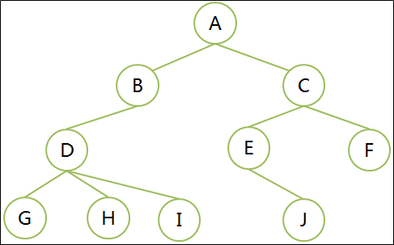
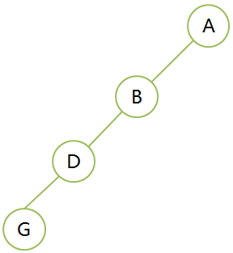
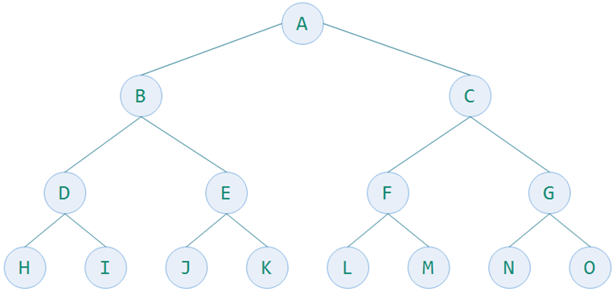
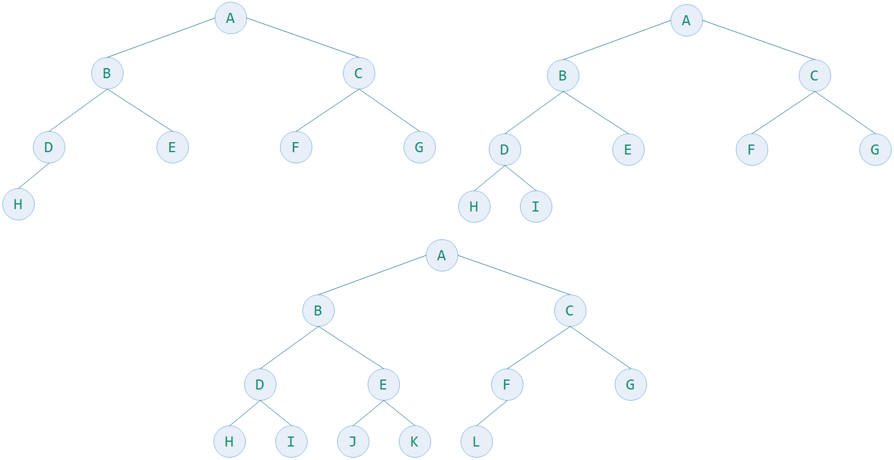
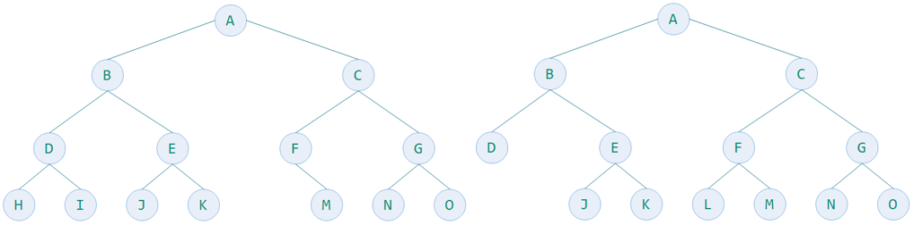
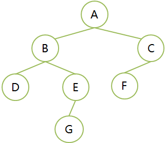
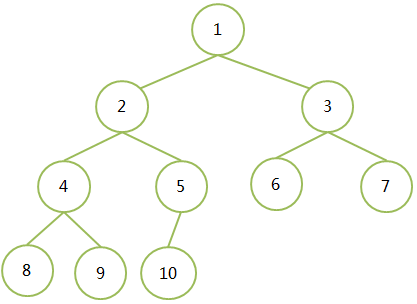

树
定义：树是非线性结构，是n个（n≥0）元素的集合。
n为0时，称为空树。
树中只有一个特殊的没有前驱的元素，称为树的根 Root。
树中除了除了根结点外，其余元素只能有一个前驱，可以有零个或多个后继。
递归定义：树T是n(n≥0)个元素的集合。n=0时，称为空树。
有且只有一个特殊元素根，剩余元素都可以被划分为m个互不相交的集合T1、T2、T3、…、Tm，而每一个集合都是树，称为T的子树Subtree。
子树也有自己的根。
名词解释
- 结点(Vertex)：树中的数据元素
- 结点的度degree：结点拥有的子树的数目称为度，记作d(v)
- 叶子结点：结点的度为0，称为叶子结点leaf、终端结点、末端结点
- 分支结点：结点的度不为0，称为非终端结点或分支结点
- 分支：结点之间的关系
- 内部结点：除根结点外的分支结点，当然也不包括叶子结点
- 树的度是树内各结点的度的最大值。D结点度最大为3，树的度数就是3

-
孩子（儿子Child）结点：结点的子树的根结点成为该结点的孩子
-
双亲（父Parent）结点：一个结点是它各子树的根结点的双亲
-
兄弟（Sibling）结点：具有相同双亲结点的结点
-
祖先结点：从根结点到该结点所经分支上所有的结点。A、B、D都是G的祖先结点
-
子孙结点：结点的所有子树上的结点都称为该结点的子孙。B的子孙是D、G、H、I
-
结点的层次（Level）：根节点为第一层，根的孩子为第二层，以此类推，记作L(v)
-
树的深度（高度Depth）：树的层次的最大值。上图的树深度为4
-
堂兄弟：双亲在同一层的结点
-
有序树：结点的子树是有顺序的（兄弟有大小，有先后次序），不能交换。
-
无序树：结点的子树是有无序的，可以交换。
-
路径：树中的k个结点n1、n2、…、nk，满足ni是n(i+1)的双亲，称为n1到nk的一条路径。就是一条线串下来的，前一个都是后一个的父（前驱）结点。
-
路径长度=路径上结点数-1，也是分支数
-
森林：m(m≥0)棵不相交的树的集合
- 对于结点而言，其子树的集合就是森林。A结点的2棵子树的集合就是森林
特点
- 唯一的根
- 子树不相交
- 除了根以外，每个元素只能有一个前驱，可以有零个或多个后继
- 根结点没有双亲结点（前驱），叶子结点没有孩子结点（后继）
- vi是vj的双亲，则L(vi) = L(vj)-1，也就是说双亲比孩子结点的层次小1
思考：堂兄弟的双亲是兄弟关系吗?
堂兄弟定义是，双亲结点是同一层的节点。右图G和J是堂兄弟，因为它们的双亲结点D和E在第三层，依然是堂兄弟。因此，堂兄弟的双亲不一定是兄弟关系。
二叉树
概念
- 每个结点最多2棵子树
- 二叉树不存在度数大于2的结点
- 它是有序树，左子树、右子树是顺序的，不能交换次序
- 即使某个结点只有一棵子树，也要确定它是左子树还是右子树
二叉树的五种基本形态
- 空二叉树
- 只有一个根结点
- 根结点只有左子树
- 根结点只有右子树
- 结点有左子树和右子树
斜树
左斜树，所有结点都只有左子树；右斜树，所有节点都只有右子树

满二叉树
- 一棵二叉树的所有分支结点都存在左子树和右子树，并且所有叶子结点只存在在最下面一层
- 同样深度二叉树中，满二叉树结点最多
- k为深度（1≤k≤n），则结点总数为2^k-1
- 如下图，一个深度为4的15个结点的满二叉树

完全二叉树
完全二叉树Complete Binary Tree
- 若二叉树的深度为k，二叉树的层数从1到k-1层的结点数都达到了最大个数，在第k层的所有结点都
- 集中在最左边，这就是完全二叉树
- 完全二叉树由满二叉树引出
- 满二叉树一定是完全二叉树，但完全二叉树不一定是满二叉树
- k为深度（1≤k≤n），则结点总数最大值为2^k-1，当达到最大值的时候就是满二叉树
下图三个数都是完全二叉树，最下一层的叶子结点都连续的集中在左边

下面2个树是完全二叉树吗？

上图的树都不是完全二叉树，它们叶子节点都没有集中到左边
性质

- 性质1：在二叉树的第i层上至多有2^(i-1)个结点(i≥1)
- 性质2：深度为k的二叉树，至多有2^k-1个节点(k≥1)
- 一层 2-1=1
- 二层 4-1=1+2=3
- 三层 8-1=1+2+4=7
- 性质3：对任何一棵二叉树T，如果其终端节点数为n0，度数为2的结点为n2，则有n0=n2+1
- 换句话说，就是叶子结点数-1就等于度数为2的结点数
- 证明
- 总结点数为n=n0+n1+n2，n1为度数为1的结点总数
- 一棵树的分支数为n-1，因为除了根结点外，其余结点都有一个分支，即n0+n1+n2-1
- 分支数还等于 n00+n11+n22 ，n2是2分支结点所以乘以2，2n2+n1
- 可得2*n2+n1=n0+n1+n2-1 => n2=n0-1
其他性质
- 高度为k的二叉树，至少有k个结点
- 含有n（n≥1）的结点的二叉树高度至多为n。和上句一个意思
- 含有n（n≥1）的结点的二叉树的高度至多为n，最小为math.ceil(log2 (n+1))，不小于对数值的最小整数，向上取整
- 假设高度为h，2^h-1=n => h = log2 (n+1)，层次数是取整。如果是8个节点，3.1699就要向上取整为4，为4层
- 性质4：具有n个结点的完全二叉树的深度为int(log2n)+1或者math.ceil(log2(n+1))
